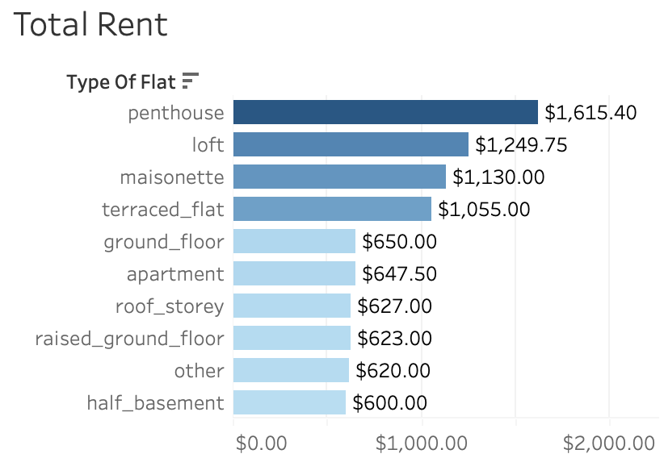
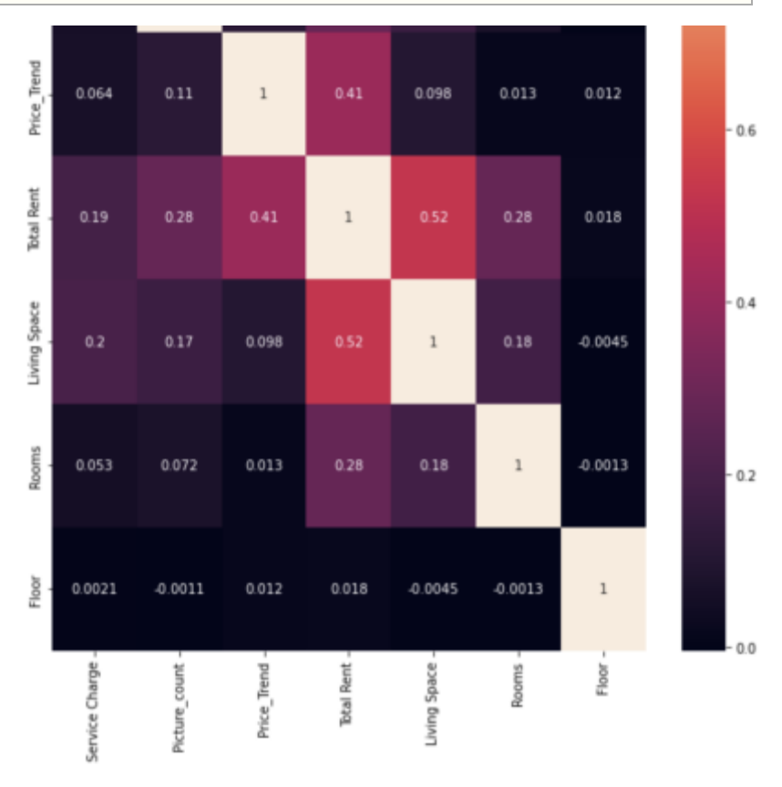
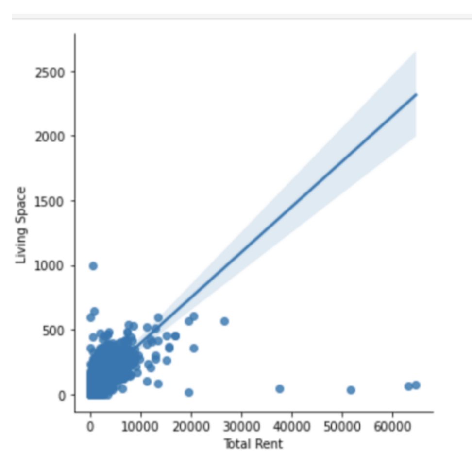

Customer Behavior Analysis
Context
Businesses from the Real Estate company in Germany have seen problems with Renting Houses. Some challenges they face are the COVID-19 plague and the problem of renting out homes. Many industries continue to find solutions on how they will market their Real Estate for people to rent homes in different regions in Germany. Understanding what Regions in Real Estate is the most popular to rent homes can help market other regions to help market other regions.
Key Questions
-
Understanding what kind of Homes people Rent(ex:houses,apartments,Mansions)
- Which Regions are the most expensive and least expensive to rent?
Steps for Data Preparation
- Clean Data for accuracy, consistency and Clarity
- Wrangle Data
- Documented changes
- Derived new variables if needed
Steps of Data Analysis
- Filtered Sort and Group data to answer Key Questions
- Conduct descriptive analysis on all key variables. Including exploring the spread of data via a scatter plot.
- Created a Correlation heat map to see if there any variables are correlated to each other.
- Create Visualization such as Cluster Analysis and linear regression
Data Analysis

The most expensive to Rent is Penthouse, loft and maisonette.The most popular Rental is Apartment, Roof_storey and Ground Floor. The cost to rent the apartment is $647 per month.

Correlation Coefficient HeatMap:
First I look to see how correlated our Variable are using the Coefficent Correlation Heatmap:
Correlation Coefficent Values Tell us that:
- Strong Relationship (.5-1.0)
- Moderatly Strong(.3-.5)
- Weak Relatoinship(0-.3)

The investigation of the relationship resulted in the development of a hypothesis: An increase in living Space will subsequently increase the Total Rent There is a moderately positive relationship for .52 . In an attempt to analyze the correlation, We see there is a linear trend for the relationship of Total Rent and Living Space
Summary & Recomendations
- The most popular Rental is Apartment. You can buy it for $647.50.
- The most expensive Germany Rental States are Bayern, Hessen, Berlin, and Hamburg. The least expensive Rentals are Thuringen, Sachsen, and Saarland.
- Find the Demographics of what kind of people are Renting the houses like are their single, Family. How much they are making? I would able to find what kind of families are rented the Rentals. Able to compare their Salary and how much they can afford to buy the rentals.
- Analyze the population for each state and see which State is the most popular that people like to live in and invest in building more Real Estate.
Links
View the Storyboard
Github